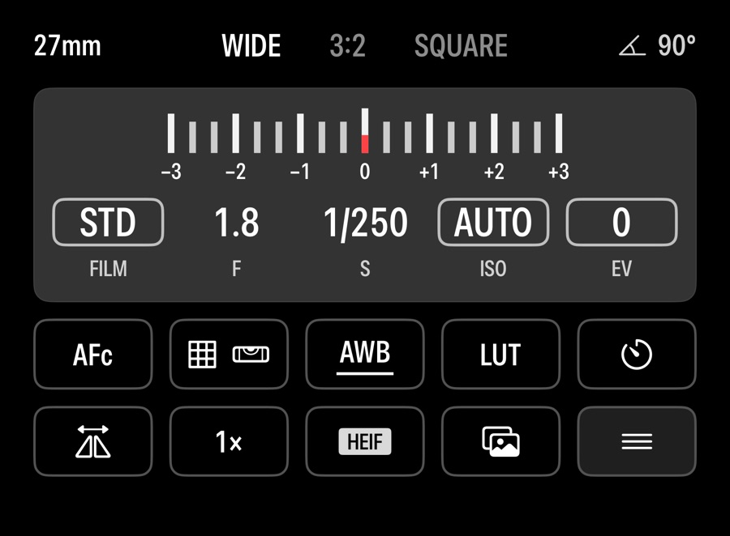
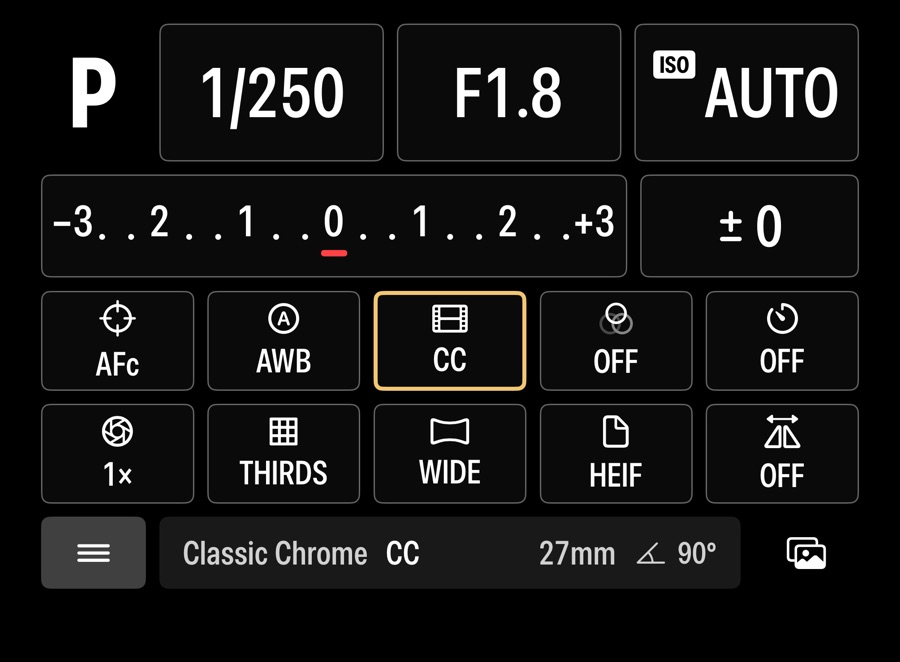
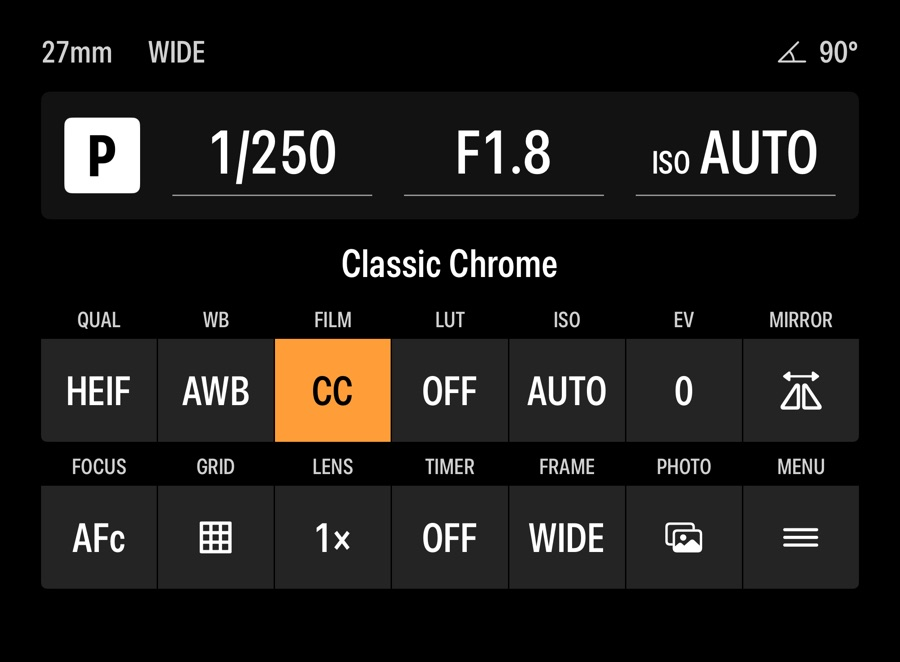
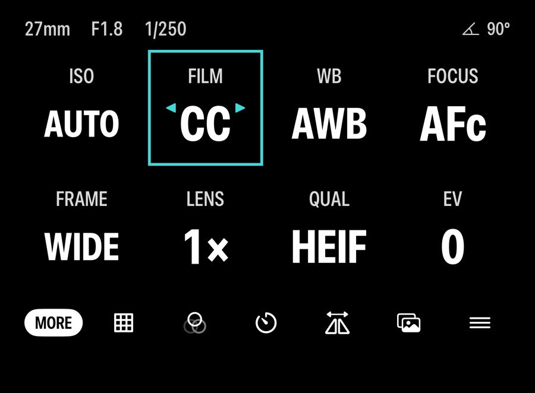
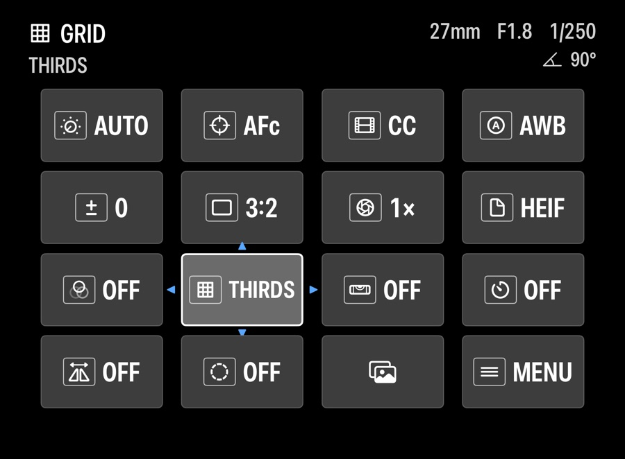
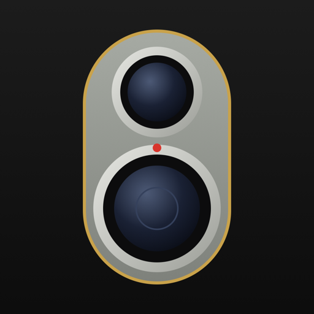

For iPhone Duo
Shoot from
the waist.
DuoFlex turns iPhone Duo into a waist-level viewfinder camera. Half-fold it with the camera half standing up, hold it at your waist, and look straight down into the "ground glass" to frame your shot, like an old twin-lens reflex.
A camera you look down into.
Waist-level finders slow you down in the best way. You compose on a ground glass instead of at arm's length, and the people you photograph see a camera, not a phone in their face.
-
Half-fold it
Hold iPhone Duo in portrait and fold it to about 90°, with the camera half standing up and facing your subject.
-
Hold it at your waist
The upright half shows your settings. The bottom half lies flat and becomes the viewfinder, like the hood of a twin-lens reflex.
-
Look down and shoot
Frame on the ground glass, swipe to set exposure or focus, and press the shutter — or use the volume buttons.
Everything on one status screen.
The upright half is laid out like a camera's status screen, in the style you choose, and every control opens its options in a sheet. Nothing scrolls, nothing hides.
Three frame formats
WIDE fills the whole viewfinder half and crops the photo to exactly what you see. 3:2 and square give you classic film frames.
Swipe for exposure
Swipe up or down on the ground glass to brighten or darken in third stops, from −3 to +3 EV.
Manual focus with peaking
Swipe sideways to focus. Sharp edges light up in yellow, so you can zone-focus and shoot without waiting for autofocus.
Level and tilt
A circular bubble level for the viewfinder half and a horizon line for camera tilt. Both turn yellow, and you feel a tap, when you're level.
ISO, white balance, AF
Live aperture and shutter readouts, fixed ISO from 50 to 3200, white balance presets, and continuous or manual focus.
Lenses
Ultra wide, wide, and a 2× crop of the main camera, with the 35mm-equivalent focal length always on show.
Self-timer
A big countdown on the ground glass. Press the shutter again to cancel.
RAW when you want it
Save a DNG alongside every photo, kept together as one RAW+HEIF item in Photos. Each file keeps the camera's EXIF data, the look you used, and, if you allow it, where you took it.
Tap to focus and meter
Tap the ground glass to focus and set exposure on that spot. A brass square confirms where.
Match-needle metering
With a fixed ISO, an amber needle on the EV scale shows the meter reading. Line it up with the red mark to expose as dialed in.
Roll mode
Commit to one film for a roll of 24 exposures. The counter shows your place on the roll, and you're told when it's finished.
Camera Control
On iPhones with Camera Control, slide through exposure compensation and film stocks without touching the screen.
Five screen styles.
Lay out the upright half the way you like to read your camera. Pick a style in the Menu. Every style has the same settings, and the last one you tapped stays highlighted, like a camera's selection cursor.
-

Rangefinder
A status screen with an exposure scale and two rows of tiles.
-

Control Panel
Big exposure boxes and a dotted EV bar over a grid of settings, like an SLR's quick control screen.
-

Info Strip
A slim exposure line over a compact, labeled grid, like an entry-level SLR's info screen.
-

Large Type
Eight settings in large type, readable at a glance from the waist.
-

Tile Grid
Every setting in a four-by-four grid, like a mirrorless camera's quick menu.
Seven film stocks, and your own LUTs.
Film simulations render live on the ground glass, grain and all, and the same pipeline develops your photo.
- Classic ChromeMuted color, firm shadows
- Portra 400Warm, soft, kind to skin
- Ektar 100Punchy and fine grained
- Velvia 50Saturated slide film
- CineStill 800TTungsten, with red halation
- Tri-X 400Gritty black and white
- Acros 100Smooth black and white
Plus four built-in LUTs — Teal & Orange, Bleach Bypass, Faded Matte, and Day for Night — and import for your own 3D .cube files, with adjustable strength.
Shooting RAW? Export any film simulation as a .cube profile and apply its color to your DNG files in Lightroom Classic, Photomator, Darkroom, or DaVinci Resolve.
Your photos stay yours.
No account
There's nothing to sign up for, and DuoFlex doesn't collect analytics.
Straight to Photos
Photos are saved to your library on your device. DuoFlex only asks to add photos, never to read them.
Location is optional
Allow location only if you want photos tagged with where you took them. Everything else works without it.

Made for iPhone Duo.
DuoFlex is designed around the fold of iPhone Duo's inner display, horizontally.
On regular iPhones with iOS 27.2 or later, it stacks the settings above the viewfinder instead. Less fun.
Made for iPhone Duo.

Duo On Air, turn the outer screen of your iPhone Duo into a glowing "On Air" status sign, in tent mode.